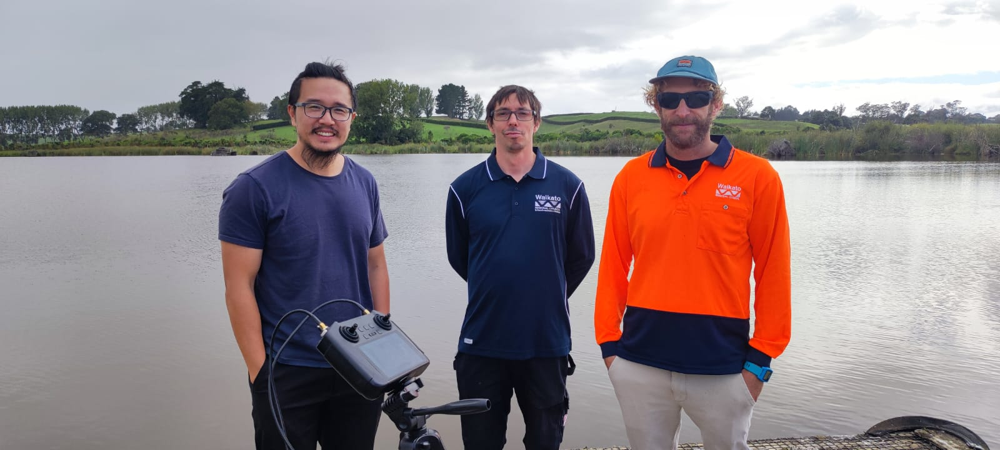
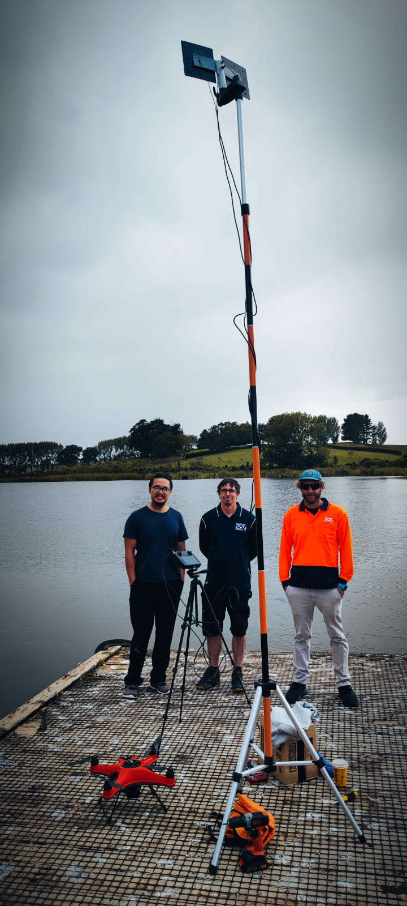
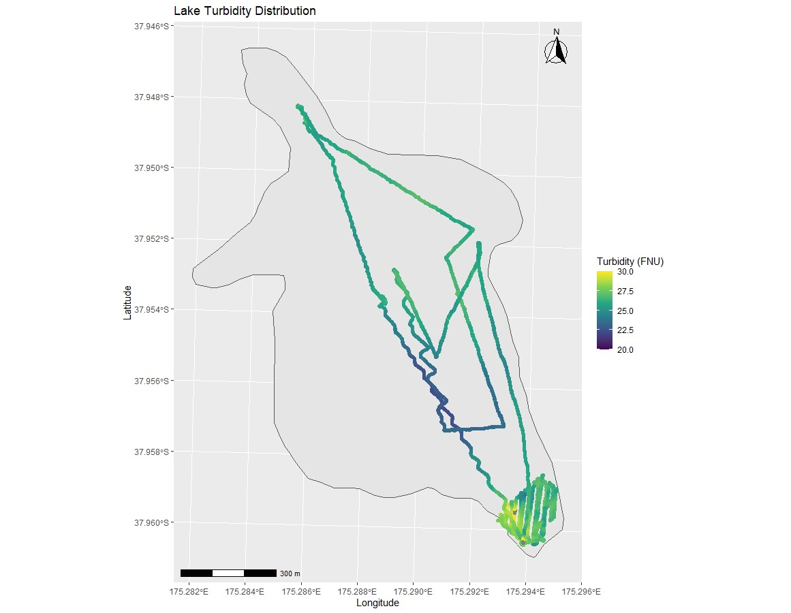

In early March 2024, the MĀKI team embarked on a collaborative venture with the Waikato Regional Council to execute the inaugural field water quality data collection and sampling initiative.
Spearheaded by lake scientist Mat Allan from the council, the project aimed to autonomously gather water quality data amidst an algae bloom event.
During this critical event, the water posed significant toxicity risks, rendering direct human contact unsafe, let alone the prospect of navigating it via traditional watercraft. Nonetheless, understanding the distribution of water quality parameters remained paramount for comprehensive analysis.



Addressing this challenge head-on, MĀKI engineered a bespoke autonomous vessel tailored to the task at hand. Equipped with remote sensing and water sampling apparatus, the vessel adeptly navigated designated areas along a pre-defined route, meticulously mapping out the region.
Furthermore, in response to specific requirements outlined by Mat Allan, the remote sensing and water sampling equipment boasted adjustable lowering capabilities, facilitating data capture across varying water depths. Precision and accuracy were paramount to ensure the equipment avoided contact with the lake bed, safeguarding against potential damage.
The culmination of this endeavour marked a significant milestone, providing scientists with unprecedented access to data collection methodologies. The resulting insights were nothing short of remarkable, underscoring the efficacy of MĀKI's innovative approach.
Looking ahead, MĀKI remains committed to advancing research and development efforts, poised to deliver further groundbreaking solutions to address complex environmental challenges.